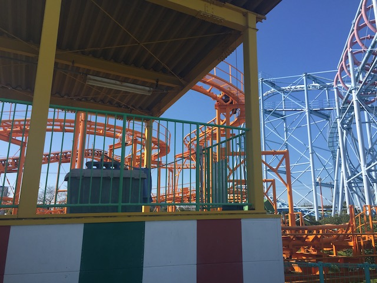

| |
Mini Coaster Review

We're here at Hamanako Pal Pal, and today, we're going to be reviewing Mini Coaster. This is a....very interesting coaster. This is a coaster that is right on the border. It's either a really small family coaster, or a really big kiddy coaster. Now I personally consider this to be big enough to be a family coaster, and not a kiddy coaster. Just barely. However, this thing, while fun, is NOT thrilling at all. It rides like one of the really big Vekoma Roller Skaters. Hell, this thing is less thrilling than those Mack Youngstar Coasters (which also, just barely qualify as family coasters). The cars for this ride are....nice little cars, similar to the cars on Mr. Toads Wild Ride. Aww. That's cute. So let's hop in the car, pull down the lap bar, and we're off! Head around a turn, and climb up the lifthill. It's pretty small, but thanks to the location, you get a great view of both inversions on Mega Coaster (which I could get those shots). We then go around some turns. And....it's awkward turns. I'm not sure. Is this ride trying to do anything. I guess it's trying to be a Wild Mouse. Except....this park already has a Wild Mouse! A sh*tty one, but still a legit Wild Mouse nonetheless. And it doesn't have the laterals of a Wild Mouse. It's just turns in the air. These turns wind up turning into another couple turns into a small little drop. Wee! Go around a turn, wave hello to Mega Coaster, before we go down a long gentle drop to the ground. We gain a little more speed, but it's still pretty mild. go around a sharp turn at the bottom, the only part of the ride even mildly thrilling, before we rise up another curved hill. Go through some straight track that's actually a really gentle drop (Japanese coasters have a lot of these). Go through another curved turnaround. Hey, we at least gain some height, before we dip back down. We go through a couple more bunny hops, turn and that's the end of the ride. This ride is....odd. I'm not sure what it wants to be. A kiddy coaster? A family coaster? A Wild Mouse? It's kind of like all of these kinds of rides, and none of them at the exact same time. It's....a little coaster. If you're a coaster begennier, this is a ride for you. If not, this is mainly for credit whoring since....it's basically a giant kiddy coaster.
4/10
Location: Hamanako Pal Pal
Opened: ???
Built by: ???
Last Ridden: November 10, 2018
Mini Coaster Photos


Home
|